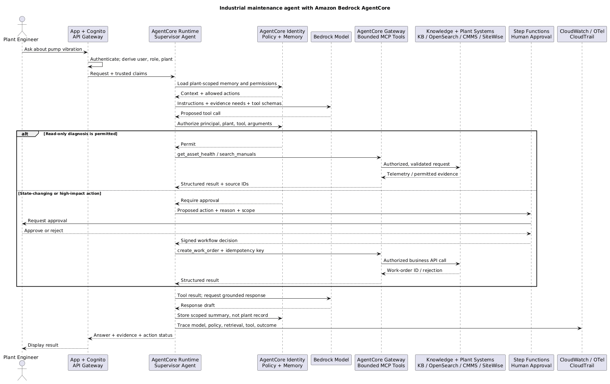

AWS AI Services
Use this page to map an AI architecture to AWS services. It is intentionally AWS-specific; model mechanics, retrieval theory, agents, and cloud-neutral production controls remain on their dedicated pages.
Agent architecture mapped to AWS
Start with the bounded agent tool sequence. The layers below map each responsibility in that vendor-neutral design to AWS implementation choices; they are not a mandatory five-service stack.
| Layer | Bounded-agent responsibility | AWS implementation choices | Boundary to remember |
|---|---|---|---|
| Interface Layer |
|
|
|
| Agent Layer |
|
|
|
| Memory Layer |
|
|
|
| Tooling Layer |
|
|
|
| Model Layer |
|
|
|
- AgentCore spans several layers because it is modular:
- Runtime/Harness and Policy belong mainly to the Agent Layer;
- Memory belongs to the Memory Layer;
- Gateway belongs to the Tooling Layer;
- Identity connects trusted identity across Interface, Agent, and Tooling boundaries.
- Cross-cutting controls apply to every layer: IAM and resource policies, KMS, Secrets Manager, VPC endpoints/PrivateLink, CloudWatch, CloudTrail, WAF, and workload evaluation.
- Read the stack as:
User → Interface → Agent Controller → Model
↕
Memory
↓
Tools / Retrieval / Workflows
1. Start with the architecture problem
- Need managed access to foundation models and GenAI building blocks?
- Start with Amazon Bedrock.
- Need custom training, full ML lifecycle, serving-container control, or dedicated model endpoints?
- Start with Amazon SageMaker AI.
- Need custom lexical, vector, filtered, or hybrid search?
- Start with Amazon OpenSearch Service.
- Need managed enterprise search with connectors and document ACL awareness?
- Evaluate Amazon Kendra.
- Need managed standard RAG connected to a Bedrock model?
- Evaluate Knowledge Bases for Amazon Bedrock.
- Need to deploy and operate custom agents with managed runtime, memory, tools, identity, policy, and tracing?
- Evaluate Amazon Bedrock AgentCore.
- These choices can be combined; they are architecture boundaries, not mutually exclusive products.

☁️ AWS AI application request sequence
2. Amazon Bedrock
- Bedrock is a fully managed platform for consuming foundation models from Amazon and third-party providers.
- Bedrock is not itself a model.
- The exact model determines:
- modalities;
- context and output limits;
- tool/structured-output behaviour;
- inference parameters;
- regional availability;
- quota and capacity options.
- Keep model IDs and Region support in deployment configuration because the catalogue changes.
2.1 Inference choices
- On-demand inference:
- useful for variable or early-stage workloads;
- subject to service/model quotas and throttling.
- Streaming inference:
- improves time to first visible output;
- does not remove total token cost or the need for output controls.
- Batch inference:
- useful for non-interactive, high-volume processing;
- requires asynchronous job and output handling.
- Inference profiles / cross-Region routing:
- can improve capacity and routing where supported;
- require review of permitted processing Regions, IAM, quotas, and data-residency policy.
- Provisioned Throughput:
- reserves model capacity where supported;
- useful for predictable demand or throughput requirements;
- creates commitment/utilization trade-offs.
- Custom/imported models:
- Bedrock supports selected customization and import paths;
- verify model, Region, deployment, and lifecycle constraints rather than assuming parity with SageMaker AI.
2.2 Bedrock application capabilities
- Knowledge Bases:
- managed ingestion and RAG retrieval/generation integration;
- covered in the retrieval comparison below.
- Bedrock Agents Classic:
- orchestrate model decisions across action groups and knowledge bases;
- action groups commonly use Lambda or return control to the application;
- use aliases/versions, traces, bounded execution, least-privilege roles, and approval gates;
- is an existing-workload path: AWS states that it is no longer open to new customers after 30 July 2026 and directs similar new implementations toward AgentCore.
- Flows:
- compose prompts, models, knowledge bases, conditions, and AWS integrations into explicit flows;
- useful when visual/managed orchestration fits the process;
- compare with Step Functions when broader durable AWS workflow semantics are needed.
- Guardrails:
- apply configurable input/output policies such as content, denied topics, word filters, and sensitive-information handling where supported;
- can be applied independently in selected workflows;
- do not replace IAM, tenant authorization, tool validation, WAF, or domain rules.
- Prompt management:
- versions and tests prompt templates and variables;
- helps deployment discipline but does not replace repository versioning and end-to-end regression tests.
- Evaluation:
- supports model and knowledge-base evaluation capabilities, including automated and human-oriented approaches where available;
- retain workload-specific datasets and release gates outside any single managed feature.
3. Amazon Bedrock AgentCore
- AgentCore is a modular platform for deploying and operating agents; it is not a model.
- It can run agents built with frameworks such as Strands Agents, LangGraph, CrewAI, or LlamaIndex and can use Bedrock or other supported model providers.
- Adopt only the components the architecture needs:
- Runtime runs custom agent code in managed, isolated, serverless sessions.
- Harness provides a managed agent loop when configuring instructions, models, and tools is preferable to owning the loop.
- Gateway exposes APIs, Lambda functions, and services as controlled tools, including through MCP; it handles tool discovery, ingress authentication, and credential exchange.
- Identity carries user/agent identity and obtains authorized credentials for AWS or third-party services.
- Policy applies deterministic action rules independently of what the model proposes.
- Memory stores short- and long-term agent context; it must be scoped by user and tenant and is not the business system of record.
- Browser and Code Interpreter provide isolated capabilities for browsing and code execution where required.
- Observability and Evaluations expose agent, model, and tool behaviour for tracing and quality measurement.
- AgentCore does not remove the need for application authentication, source-system authorization, least-privilege IAM, data isolation, or human approval.
3.1 AgentCore versus Bedrock Agents Classic versus Step Functions
- Choose AgentCore for new implementations when custom or managed agent loops need runtime, memory, tool connectivity, identity, policy, and observability.
- Maintain or migrate Bedrock Agents Classic when an existing workload uses managed model-led orchestration around instructions, action groups, and knowledge bases.
- Choose Step Functions when the states, branches, retries, compensations, and approvals are known in advance.
- Combine them when useful:
- AgentCore handles bounded reasoning and tool selection;
- Step Functions owns durable business workflow and human approval;
- business APIs remain responsible for validating and authorizing every state change.
3.2 Industrial example: plant-maintenance agent
- Use case: a plant engineer asks why a pump is vibrating and, if justified, requests a maintenance work order.
- Entry boundary:
- AWS WAF protects the public endpoint;
- Amazon Cognito authenticates the engineer;
- API Gateway passes trusted identity claims such as
user_id,plant_id, androleto the application.
- Agent boundary:
- AgentCore Runtime hosts a supervisor agent built with a selected framework;
- the agent invokes a Bedrock model for reasoning but treats model output as a proposal;
- AgentCore Identity and Policy restrict which tools that principal can invoke for that plant.
- Tool boundary:
- AgentCore Gateway exposes narrow tools such as
get_asset_health,search_manuals, andcreate_work_order; - Lambda/API adapters call AWS IoT SiteWise, the maintenance system, or other industrial APIs;
- tool schemas, server-side authorization, validation, timeouts, and idempotency remain mandatory.
- AgentCore Gateway exposes narrow tools such as
- Knowledge boundary:
- manuals and incident history can be retrieved through Bedrock Knowledge Bases or OpenSearch over documents in S3;
plant_id, asset class, and document ACLs constrain retrieval;- metadata relevance filters do not replace authorization at the source.
- State boundary:
- AgentCore Memory can retain scoped conversational context and preferences;
- asset telemetry and work-order status remain authoritative in their operational systems.
- Safety boundary:
- read-only diagnosis may execute automatically when policy permits;
- work orders, shutdown requests, or other high-impact actions use Step Functions and human approval;
- the agent must not directly write to PLCs or bypass deterministic industrial safety controls.
- Operations boundary:
- use VPC connectivity/private endpoints where supported, KMS encryption, and Secrets Manager for credentials;
- CloudWatch/OpenTelemetry records the model, policy, retrieval, tool, latency, and outcome trace;
- CloudTrail records supported AWS API activity;
- EventBridge and SQS decouple telemetry/document ingestion and absorb bursts.

🏭 Production AgentCore sequence: diagnose freely, mutate only with approval
4. Amazon Bedrock versus SageMaker AI
- Choose Bedrock when the main goal is to:
- consume supported foundation models through managed APIs;
- switch among catalogue models with less serving infrastructure;
- use managed GenAI capabilities such as Knowledge Bases, Agents, Flows, Guardrails, or prompt management;
- integrate with AWS identity, networking, logging, and billing.
- Choose SageMaker AI when the main goal is to:
- prepare data and run training jobs;
- build custom ML models or use custom training code;
- fine-tune with broader control over compute and artifacts;
- deploy custom containers/models to controlled endpoints;
- choose real-time, serverless, asynchronous, or batch inference patterns where supported;
- operate notebooks, experiments, model registry, and ML pipelines/lifecycle.
- The real decision boundary is managed model capability versus lifecycle/serving control, not simply “GenAI versus ML”.
- Use both when useful:
- custom classifier or embedding endpoint on SageMaker AI + generation on Bedrock;
- model trained/customized through SageMaker AI and deployed through an appropriate SageMaker or Bedrock path;
- Bedrock for rapid evaluation, then a controlled endpoint when economics or specialization justify it.
- Compare using:
- supported model and customization technique;
- serving/container and hardware control;
- scaling and cold-start behaviour;
- networking and encryption requirements;
- operations expertise;
- utilization and total cost;
- model artifact portability.
5. Knowledge Bases for Amazon Bedrock
- A managed Knowledge Base can coordinate supported parts of:
- source connection and ingestion;
- parsing and chunking configuration;
- embedding generation;
- vector/knowledge store integration;
- metadata filtering;
- retrieval and reranking options;
Retrieveor retrieve-and-generate application flows;- citations/source attribution.
- Managed convenience is strongest for standard RAG with supported sources and stores.
- Validate rather than assume:
- parser quality for PDFs, tables, images, and scanned documents;
- chunking strategy and parent/child behaviour;
- freshness and sync failure handling;
- exact-match and hybrid-search behaviour;
- metadata and ACL enforcement;
- vector store, Region, embedding, and reranker compatibility;
- retrieval traces and evaluation access.
- Use custom retrieval when the workload needs:
- specialized document parsing;
- complex entitlement logic;
- carefully tuned lexical/vector fusion;
- custom query rewriting or reranking;
- graph, SQL, API, or multi-index retrieval;
- strict freshness or ingestion transactions;
- full control over candidate scoring and context assembly.
- Agentic retrieval can decompose complex questions and iterate across managed knowledge-base retrievers where supported:
- useful for multi-step questions;
- adds model calls, latency, cost, and more failure paths;
- bound iterations and evaluate against simpler retrieval.
6. Amazon OpenSearch Service
- Use OpenSearch when the application needs direct control over search/index design.
- Relevant capabilities:
- inverted indexes and BM25 full-text search;
- exact terms, filters, phrases, facets, and aggregations;
- vector fields and approximate nearest-neighbour search;
- neural/semantic search integrations;
- hybrid search and search pipelines for combining signals;
- metadata filtering and operational search APIs.
- Responsibilities that remain with the application/managed layer:
- parsing and chunking;
- document/ACL synchronization;
- embedding lifecycle;
- query rewriting;
- score/rank fusion tuning;
- reranking and context assembly;
- generation and citation policy.
- Deployment choices:
- managed domains provide node/topology control;
- OpenSearch Serverless reduces cluster operations for supported collection patterns;
- evaluate cost shape, scaling behaviour, limits, networking, and feature support.
- Failure modes:
- vector-only retrieval misses identifiers;
- raw BM25/vector scores are fused without normalization;
- restrictive filters reduce ANN recall;
- mappings or embedding dimensions drift;
- index refresh or failed ingestion serves stale evidence;
- an application filter is mistaken for complete authorization.
7. Amazon Kendra
- Kendra is a managed enterprise search service oriented around organizational content discovery.
- Useful capabilities include:
- data-source connectors;
- document indexing and field mapping;
- ranked results, excerpts, and FAQ-style content;
- document attributes and relevance tuning;
- user/group context and ACL-aware filtering where supported.
- Kendra may be preferable when connector behavior and enterprise permissions are the primary problem.
- Check exact index type, API, connector, and edition/feature support:
- ACL ingestion differs by connector;
- documents without ACLs may be treated as public under relevant configurations;
- group mapping and identity synchronization must stay current;
- relevance tuning changes ranking, not authorization.
- Kendra returns search evidence; an application or Bedrock integration still owns generation, prompts, validation, and end-to-end citations.
8. Kendra versus OpenSearch versus Bedrock Knowledge Bases
- Choose Bedrock Knowledge Bases when:
- managed standard RAG is the priority;
- supported sources/stores and retrieval controls meet requirements;
- reduced implementation effort is worth less stage-level control.
- Choose OpenSearch when:
- exact terms, BM25, vectors, filters, facets, and hybrid tuning are central;
- the team can own ingestion, schema, ranking, security integration, and operations.
- Choose Kendra when:
- enterprise connectors and search-oriented ACL/user context are central;
- managed relevance and organizational knowledge discovery matter more than low-level index control.
- Combine only with a clear boundary:
- Bedrock Knowledge Bases can use supported retrieval stores/services;
- a custom application can retrieve from OpenSearch or Kendra and call Bedrock for generation;
- avoid indexing the same corpus several times without explicit ownership, freshness, and evaluation reasons.
9. Supporting AWS services by architecture role
9.1 Entry, identity, and protection
- Amazon API Gateway:
- authenticated API boundary, throttling, request validation, and service integration;
- confirm streaming and timeout requirements for interactive model responses.
- Amazon Cognito:
- application user sign-up/sign-in and token issuance;
- pass trusted user/tenant claims into application authorization, not directly as model authority.
- AWS IAM:
- least-privilege roles for model invocation, ingestion, retrieval, agents, Lambda, and operators;
- use separate runtime and deployment roles; constrain resources and delegated roles.
- AWS WAF:
- controls abusive/malformed public traffic and common web attacks;
- is not a complete prompt-injection detector.
- AWS PrivateLink / VPC endpoints:
- private access to supported services without public internet paths;
- verify service/Region support and still enforce IAM and egress controls.
9.2 Compute and orchestration
- AWS Lambda:
- short ingestion transforms, validation, tool adapters, event handlers, and Agent action groups;
- avoid forcing long-running/high-memory parsing or orchestration into Lambda limits.
- Amazon ECS:
- containerized parsers, model gateways, retrieval services, workers, and long-running tools with simpler orchestration than Kubernetes.
- Amazon EKS:
- Kubernetes-based custom serving and platform control;
- justified when Kubernetes capabilities and operational maturity already exist.
- AWS Step Functions:
- durable, explicit ingestion, evaluation, approval, and tool workflows;
- useful for visible state, retries, compensation, callback, and long-running execution.
- Amazon EventBridge:
- routes document, workflow, evaluation, and model lifecycle events between components.
- Amazon SQS:
- buffers ingestion or inference jobs, smooths bursts/quotas, and isolates retries;
- configure visibility timeout, dead-letter handling, deduplication/idempotency, and queue-age alarms.
9.3 Data and state
- Amazon S3:
- versioned source documents, parser output, prompts, evaluation sets, model artifacts, and batch input/output;
- use event-driven ingestion, encryption, access points/policies, lifecycle, and object versioning as required.
- Amazon DynamoDB:
- task/conversation state, idempotency keys, tool status, routing configuration, and evaluation metadata;
- design tenant-aware keys, conditional writes, and TTL deliberately.
- Amazon Aurora / Amazon RDS:
- transactional application data, entitlements, audit relationships, and tool-backed business operations;
- vector extensions may fit workloads already centered on relational consistency, but evaluate search scale/features.
- AWS Glue:
- catalogues and transforms governed data for batch preparation, metadata enrichment, and analytics/evaluation pipelines;
- it is not the online RAG orchestrator.
- Amazon Macie:
- discovers sensitive data in S3 before documents enter indexes, prompts, or evaluation datasets;
- findings need a response/quarantine workflow.
9.4 Encryption, secrets, and operations
- AWS KMS:
- customer-managed key policies and encryption boundaries for documents, indexes, logs, databases, and artifacts;
- key policy and cross-account design are part of authorization.
- AWS Secrets Manager:
- stores and rotates database, provider, and tool credentials;
- applications retrieve secrets at runtime and never place them in model context.
- AWS CloudTrail:
- records supported AWS control-plane/data events for governance and investigation;
- configure the relevant event types, retention, and protected central storage.
- Amazon CloudWatch:
- logs, metrics, alarms, dashboards, and traces for latency, throttling, errors, queues, and application outcomes;
- redact sensitive prompts/responses and correlate with model/retrieval/tool IDs.
10. Reference AWS decision flow
Need a managed foundation-model API?
└─ Bedrock
Need custom training, serving code, hardware, or ML lifecycle control?
└─ SageMaker AI
Need changing/private knowledge?
└─ RAG
├─ managed standard Bedrock integration → Bedrock Knowledge Bases
├─ custom lexical/vector/hybrid search → OpenSearch
└─ enterprise connectors + ACL search → Kendra
Need a known multi-step AWS process?
└─ Step Functions / application workflow
Need dynamic tool choice?
├─ new agent/runtime implementation → AgentCore
└─ existing action-group workload → Bedrock Agents Classic / migration review
Need known durable states, compensation, or human approval?
└─ Step Functions, optionally invoking an AgentCore agent
11. AWS architecture review checklist
- Model and Region:
- exact model ID, quota, capacity mode, fallback, and deprecation plan are known.
- Identity:
- caller, runtime role, agent/tool role, and deployment role are distinct and least privileged.
- Data:
- classification, processing Region, encryption, retention, and provider-use terms are approved.
- Retrieval:
- parser, chunking, embedding, lexical/hybrid behaviour, ACL sync, freshness, and evaluation are explicit.
- Network:
- ingress, private endpoints, outbound destinations, DNS, and cross-account paths are documented.
- Reliability:
- timeout, retry, idempotency, queue, quota, fallback, and degraded mode are tested.
- Safety:
- guardrails, WAF, authorization, schema validation, and human approval have separate responsibilities.
- Observability:
- one trace links API caller, model, retrieval, tool, IAM/policy decision, latency, tokens, and outcome.
- Evaluation:
- prompt/model/retrieval changes run against a versioned workload suite before promotion.
For how retrieval works internally, see AI knowledge bases. For vendor-neutral security, reliability, cost, and evaluation, see AI infrastructure and evaluation.
Official references
- Amazon Bedrock documentation
- Amazon Bedrock AgentCore overview
- AgentCore Memory types
- AgentCore Gateway
- AgentCore VPC connectivity
- AgentCore multi-tenant reference architecture
- Bedrock Agents Classic action groups and maintenance notice
- Deploy models for inference with SageMaker AI
- Amazon OpenSearch Service neural and hybrid search
- Amazon Kendra user-context filtering
- Amazon Kendra relevance tuning